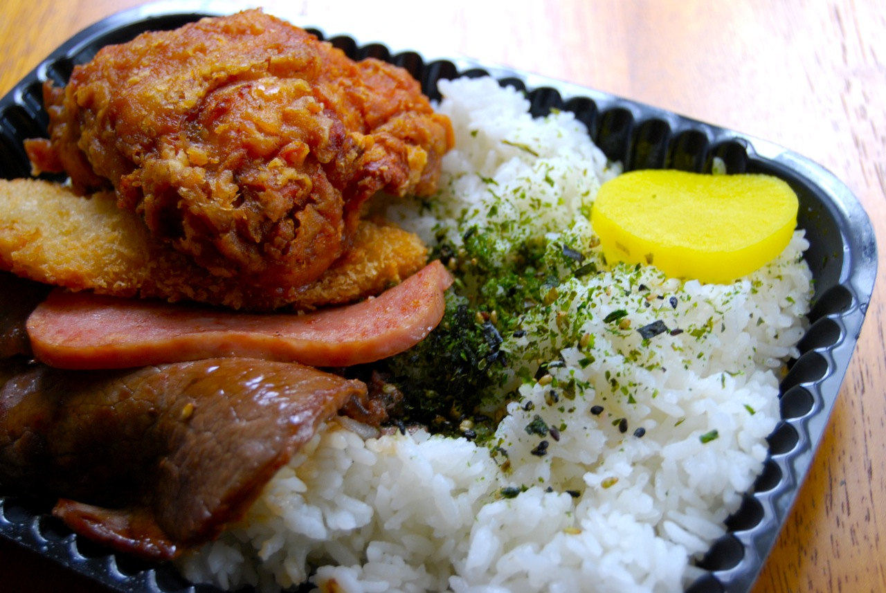

Ka`a`awa Beach
Traveling along the road towards North Shore, you will pass by this breathtaking coastline that many locals will spend weekends at. The crystal clear waters, the soft toe-tickling sand, and the cool ocean breeze makes this beach a memorable experience.
"Thousand Stairs"
Imagine your impending doom in a life threatening experience. At first glance, this hike looks like that. Forged from an old WWII railroad transport track, Koko Head crater hike to locals is known as the "Thousand Stairs" Hike. The views are 100% worth it.
Local Staple Poke
Every state has their signature food. Alaska has salmon, Idaho has potatoes, Washington has apples. Hawaii's go to food though for breakfast, lunch, dinner, or even a snack, is Poke. Perfectly seasoned raw fish of juicy goodness.
"Famous Zippys' Zip Pac"

iHop and Dennys are great an all, but Hawaii has our own 24/7 dinner; Zippys. If you need a quick bite to eat or lunches to go, a Zip Pac is the way to go. You ask any kid who grew up in Hawaii and 90% will say he or she has had one.